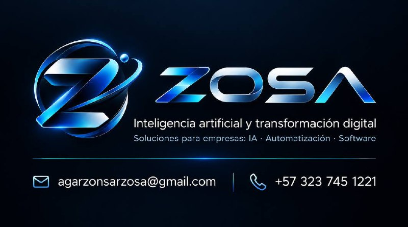

IA que trabaja
con tu contexto.
Asistentes para consultar información, preparar documentos y acompañar tareas por voz o texto.
- Asistentes y bases de conocimiento
- Análisis de documentos e información
INTELIGENCIA ARTIFICIAL + TRANSFORMACIÓN DIGITAL
Diseñamos inteligencia artificial, automatizaciones y software que resuelven retos reales de tu negocio.
Desde Popayán, Colombia. Con visión de futuro.

01 / LO QUE PODEMOS CONSTRUIR
La solución empieza en tu operación: qué necesita tu equipo y qué quieres hacer mejor.
Asistentes para consultar información, preparar documentos y acompañar tareas por voz o texto.
Integramos las herramientas de tu negocio para reducir pasos manuales y dar seguimiento al trabajo.
Páginas, aplicaciones y plataformas con una experiencia clara, desde el celular hasta el escritorio.
02 / DE LA IDEA A LA PRÁCTICA
Una selección del portafolio de Ángel Garzón, detrás de ZOSA. Cada proyecto tiene su propio alcance y evolución.
De una conversación a una tarea concreta. Un asistente por voz y texto para trabajar con información, documentos y herramientas.
Conocer BoroIA aplicada a la revisión de comprobantes de pago.
Lugares, cultura y rutas para descubrir el Cauca.
03 / ASÍ TRABAJAMOS
Avanzamos contigo, con un alcance definido y entregas que puedas revisar.
Revisamos el proceso, las personas y el resultado que necesitas.
Acordamos prioridades, alcance y cómo comprobaremos que funciona.
Validamos el funcionamiento y la experiencia con escenarios concretos.
Dejamos claro cómo usar la solución y acordamos los siguientes pasos.
EL SIGUIENTE PASO EMPIEZA CONTIGO
No necesitas tener la solución. Empecemos por el reto.
Hablar por WhatsApp agarzonsarzosa@gmail.com+57 323 745 1221